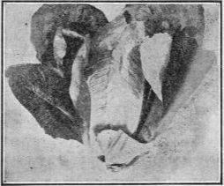

Lettuce (Lactuca Sativa)
Description
This section is from the book "Vegetable Gardening", by Ralph L. Watts. Also available from Amazon: Vegetable Gardening.
Lettuce (Lactuca Sativa)
487. History
This species, which has never been found in the wild state, is thought to be a modification of Lactuca scariola, which is indigenous to parts of Europe. Asia and Africa. The Greeks and the Romans used lettuce as a salad, and it is highly probable that the ancients were familiar with its cultivation.
488. Importance
Lettuce is by far the most important salad crop grown in the United States and Canada. It is a standard vegetable in European countries. Market gardeners in the United States regard it as one of their most profitable crops, and the truck farmers of the South have found it a satisfactory vegetable to grow on a large scale for northern markets. The areas devoted to lettuce are especially large in the Norfolk region and at San ford, Fla. In recent years lettuce has been produced extensively as a late summer and fall crop in some of the muck soils of the North. As a forcing crop, both in frames and in grown houses, it occupies first place in commercial importance. Lettuce may be found on our city markets throughout the year.
489. Varieties
Prof. W. W. Tracy ("American Varieties of Lettuce," United States Department of Agriculture, Bul. 69, p. 12) presents the following classification and description of the various types: "The classes to be made of lettuce in the following descriptions are those recognized by most seedsmen and horticultural writers; namely, the cos, distinguished by their upright habit, long, loaf-shaped heads, and spatulate leaves; the butter, distinguished by their buttery flavor; and the crisp, distinguished by their hard, crisp texture. . . . There is no difficulty in identifying the cos varieties (Figure 84), but certain of the crisp and the butter varieties are much alike. The latter are generally more delicately flavored, softer, and more pliable in texture. The crisp varieties are coarser veined and larger ribbed than the butter sorts, but not more so than the cos varieties.
Fig. 84. cos lettuce.
Their borders are also more developed than other parts of the leaf, and the cotyledons of the young seedlings are generally longer than those of the butter sorts. On account of their much-developed borders they are sometimes called frilled lettuce.
"These three classes of lettuce are each again separated into two subclasses. The cos are divided into those which are self-closing, or comprise kinds which form well-blanched heads without tying up, and the loose-closing, or those open sorts, which will not form wellblanched heads without tying. Express Cos and Paris White Cos are good examples of the first, and Bath Cos of the loose-closing varieties.
"The butter and crisp classes are separated alike into cabbage-heading and bunching, the former referring to plants whose leaves overlap one another in such a smooth, regular way as to form a head like a cabbage, and the latter to those whose heads are open, clustered, or bunched in arrangement, or if overlapping one another at all doing so at the heart only, all the outer or visible portions remaining more or less loose leaved. Hanson and Big Boston are good examples of the cabbage-heading varieties, and Early Curled Simpson, Prize Head and Lancaster of the bunching varieties. Under the latter subclass are embraced all degrees of clustered growth from varieties loose-leaved, like an endive, and represented by Boston Curled and Green Fringed, to those densely bunched and represented by Black-Seeded Simpson and White Star".
In the selection of varieties the following factors should be taken into account:
1. Market Requirements
Eastern markets prefer head lettuce, although there is an increasing demand for the cos type. For many of the western markets the well-known loose-leaved or bunching variety, Grand Rapids, finds ready sale.
2. Soil Adaptation
It is much less difficult to grow head lettuce in sandy than in heavy soils. Grand Rapids may be grown in all types of heavy soils, and cos is said to be well adapted to clay loams.
3. Climatic Conditions
Some varieties succeed better than others at comparatively high temperatures.
4. The Season
Varieties differ greatly in their power to endure heat and cold.
5. Method Of Growing
Method Of Growing, whether in the open, the hotbed, the cold frame or the greenhouse.
Eclipse or Express, Dwarf White Heart and Paris White are excellent varieties of the cos type (also known as the Romaine). Hanson, Iceberg, and Brittle Ice are well-known varieties of the solid, "crisp-head" lettuces. The butter varieties are best represented by Dutch Butter, All Seasons, California Cream Butter, and Deacon. Big Boston is grown most largely as a head lettuce in the open ground. Other varieties valued for field planting are May King, All Heart and Sensation. Grand Rapids is the most popular loose-leaved bunching variety grown in the western greenhouses. The various strains of Tennis Ball meet with the greatest favor among eastern greenhouse growers.
There are over 100 distinct varieties of lettuce, which show the widest variation in size, color, solidity, texture, leaf-formation, flower, quality, disease resistance, tenderness to heat or cold and time required to attain maturity. The three best-known and most largely grown varieties in America are Big Boston, Black-Seeded Tennis Ball and Grand Rapids.
490. Climatic Requirements
Lettuce is a cool weather plant. It stands cold much better than heat. The tendency of many varieties is to produce seed shoots prematurely when an attempt is made to grow them in midsummer. The large markets are supplied by various regions which furnish the best conditions as the season advances and by the use of glass and artificial heat during the winter. When properly hardened the young plants will stand even lower temperatures than cabbage plants. A drop of 20 degrees below freezing will cause no injury if the plants have been fully hardened. The matured crop is more easily damaged by severe freezing. Notwithstanding the fact that lettuce is a cool weather plant, it is grown all summer in most parts of the North, due largely to the adaptation of varieties to various climatic conditions. The young plants are wintered without protection in the Norfolk region; they often pass the winter uninjured on Long Island, especially if covered with a light mulch.
Continue to:
Tags
plants, crops, gardening, cultivated, harvesting, food ,greenhouses, fertiliser, vegitables